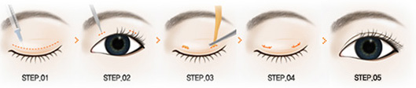

这样的眼睛会放电，你是否心动?
拯救四种不美眼睛
你中招了没？
-
-
单眼皮
上睑皮肤较薄的单眼皮，看上去总是那么无神，缺少灵动的感觉…
-
-

-
内双眼皮
虽是双眼皮，但睁时很不明显，或完全消失，心里总是有些遗憾…
-
-
大小眼
一只眼单，一只眼双，或两侧双眼皮宽窄不一，给人一种不和谐感…
-
-
-
眯眯眼
生来就是一条缝，明明很用力睁着，却仿佛永远睡不醒…
-
韩式双眼皮的秘密
选择江城的三大理由不容错过

-
韩式隐形切开法
疼痛系数：1.7分查看疼痛系数等级
适合人群上睑皮肤松弛或脂肪过多者、老年性皮肤松弛眼睑臃肿 者、外眼角松弛导致三角眼。
韩式隐形切开法，是指沿双眼皮线对皮肤、肌肉、脂肪等综合处理，使眼外皮和睁开眼睛时活动的肌肉之间形成粘着现象，进而塑造出自然优美的双眼皮。
韩式隐形切开法 手术过程图示
手术时间：20-30分钟
恢复时间：3-4天消肿
技术特点：适应所有眼部情况,永久无痕
价格区间：
在线问问
-
韩式MX埋线双眼皮
疼痛系数：1.2分查看疼痛系数等级
适合人群眼睑较薄或者眼睑下垂较轻者。
韩式MX埋线双眼皮是一种无需切开眼皮的方法，只需将一条细线埋入设计好的位置，就可达到双眼皮的目的，效果自然，恢复期短，颇受欢迎。
韩式MX埋线双眼皮 手术过程图示
手术时间：10-20分钟
恢复时间：3-6天消肿
技术特点：恢复快,手术技术成熟.
价格区间：
在线问问

-
韩式三点定位双眼皮
疼痛系数：1.5分查看疼痛系数等级
适合人群眼睑皮肤薄、眼裂长、鼻梁高的求美者
韩式三点定位双眼皮手术，就是在眼皮上制作三个长度仅有2―3毫米的不连续的微小伤口，通过这些小伤口把双眼皮固定，还可以同时抽出眼泡脂肪。做出的双眼皮线条自然美观，睑缘充分舒展，且创口更小，消肿更快，效果可永久维持。
韩式三点定位双眼皮 手术过程图示
手术时间：20-30分钟(不包括术前设计)
恢复时间：3-5天消肿
技术特点：手术切口隐蔽，恢复快
价格区间：
在线问问
-

整形外科首席专家
上海市医师协会会员
中华医学会会员
毕业于同济医科大学。拥有丰富的皮肤美容外科临床诊疗经验，集生物医学、人体美学于一体，精于微创整形外科手术技巧，常年主持承担皮肤外科、美容外科临床重点科研课题攻关工作，攻坚克难，精益求精，为我院医疗美容科、皮肤外科积累了大量可靠有效的临床诊疗方案。
擅长：自体脂肪移植，注射微整形、面部年轻化、修身塑形，除皱驻颜;善于运用外科技术，修复皮肤缺损。
-
郭晔跟求美者术前沟通
郭晔精细化操作手术过程
更多美眼对比案例
为保护求美者隐私,更多案例请到医院观摩
安全,美丽―抓住最重要的核心